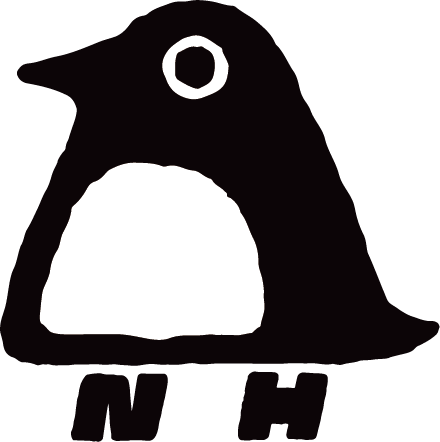

语音模仿相似度比对
上传一段原音频，然后对着麦克风模仿它，看看你模仿得有多像。
用
ECAPA-TDNN 声纹模型
（VoxCeleb 训练）在
你的浏览器本地
比对，不上传任何服务器。
正在加载声纹模型…（首次约 33MB，之后走浏览器缓存）
① 原音频（你想让人模仿的）
② 你的模仿
开始录音
开始比对
0%
声纹相似度
说明：分数 = 两段音频声纹向量的余弦相似度（浏览器本地实时计算）。
同一人 / 音色越接近 → 越高；不同人 → 低；
静音或非人声 → 接近 0
。